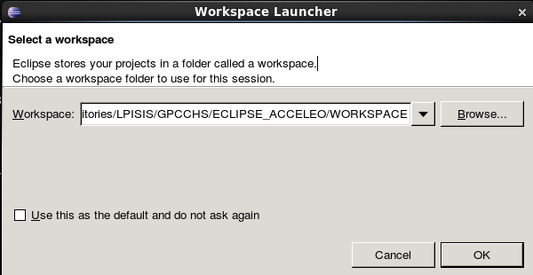

Set the workspace like the following
Go to Run > Run Configurations and fill like the following

Click Run to generate proto/adapters
The outputs files are located in the path provided by Target in the configuration above
Once generated, ths output folder goes to the adapters files a the root of client's GPCCHS repo